MDP
From WEST Mediawiki
Contents |
The Multi Dirichlet Process
TBD: Description of MDP using the Chinese restaurant scheme.
Three Level MDP Model Parameters for MGTD and similar models
These are all parameters for a three level MDP model as used by MGTD (see WWW paper) including latent variables, helping variables and hyperparameters.
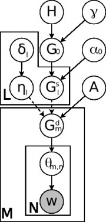  MGTD model
MGTD model
Main variables
| V | Vocabulary size of the corpus |
| M | Number of documents in the corpus |
| H | A Dirichlet distribution on the space of all possible topics Θ with uniform concentration parameter β |
| β | Uniform concentration parameter for the Dirichlet distributed probability function H. |
| G0 | A probability distribution on Θ drawn from a Dirichlet process (DP) with base distribution H and concentration parameter γ |
| γ | Concentration parameter for the first level DP |
| 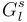 | A probability distribution on Θ drawn from a Dirichlet process with base distribution G0 and concentration parameter α0 |
| α0 | Concentration parameter for the second level DPs |
| L | Number of distributions on the second level |
| 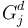 | A probability distribution on Θ drawn from a multi-Dirichlet process with parent base distributions 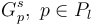, concentration parameter A and mixing proportions 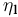 |
| A | Concentration parameter for the third level MDPs |
| ηl | Mixing proportions for third level MDPs, a multinomial distribution over parent distributions. Has a uniform Dirichlet prior with parameter δ. |
| δ | Uniform concentration parameter of a Dirichlet prior over ηl |
| Pl | Indices of parent base distributions |
| M | Number of distributions on the third level |
| θji | Topics drawn from |
| wji | Word drawn from 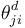 |
| N | Number of topics and words drawn from |
Hyperparameters (in alphabetical order)
These parameters are for the optional parameter sampling. Note that sampling for Dirichlet parameters takes approx. 200 iterations and significantly slows down the topic sampling process.
| 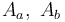 | Parameters for a Gamma prior over A with shape Aa and rate Ab |

| Parameters for a Gamma prior over α0 with shape α0a and rate α0b |
| 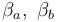 | Parameters for a Gamma prior over β with shape βa and rate βb |
| 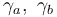 | Parameters for a Gamma prior over γ with shape γa and rate γb |
| 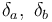 | Parameters for a Gamma prior over δ with shape δa and rate δb |
Helping variables for sampling
| K | Number of topics in use at current sampling step (only a finite set of topics is drawn from Θ and assigned to words as the number of words is finite) |
| mk | Number of tables assigned to the kth topic in the Dirichlet process at level one which generates G0 |
| mlk | Number of tables assigned to the kth topic in the lth multi-Dirichlet process at level two which generates |
| mjkl | Number of tables from parent base distribution with index l assigned to the kth topic in the lth multi-Dirichlet process at level three which generates |
| njk | Number of times the kth topic was assigned to a word in the jth document by sampling a topic from |
| nkt | Number of times the tth term was assigned to the kth topic |
| nkt | Number of times the kth topic was assigned to a term |
| zji | Topic assignment to the ith word in document j. 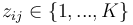 |
| π0 | Multinomial distribution over the topic indices as an alternative representation of the distribution over the topic space in G0 |
| 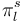 | Multinomial distribution over the topic indices as an alternative representation of the distribution over the topic space in |
| 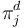 | Multinomial distribution over the topic indices as an alternative representation of the distribution over the topic space in |

{kind=link}